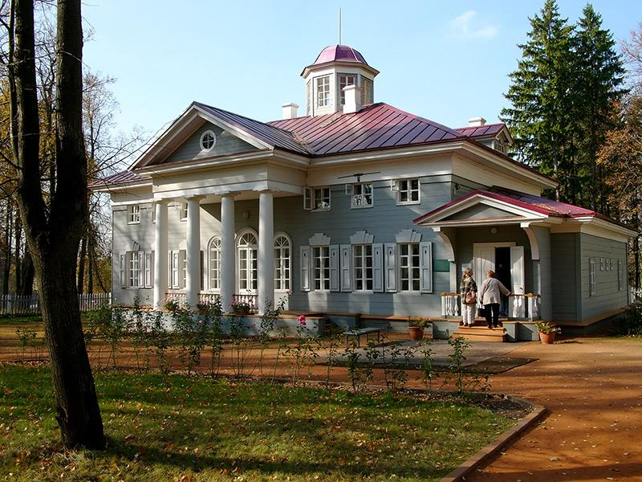

|  | Министерство культуры Российской Федерации Портал Культура.рф Проект «Образы России» |
Историко-литературный музей-заповедник А.С.Пушкина (усадьба Захарово)
Усадебный дом

К 200-летнему юбилею со дня рождения поэта был воссоздан усадебный дом по проекту Н.Е.Карташовой и В.В.Зубарёва, на средства Одинцовского района.
Дом деревянный двухэтажный, с антресольным вторым этажом, с фронтоном и колоннами, с бельведером, с анфиладным расположением комнат.
Усадьба с домом была приобретена бабушкой поэта Марии \ей Алексеевной Ганнибал в 1804 г. и владела им до 1810 г. Здесь прошли детские годы А.С.Пушкина